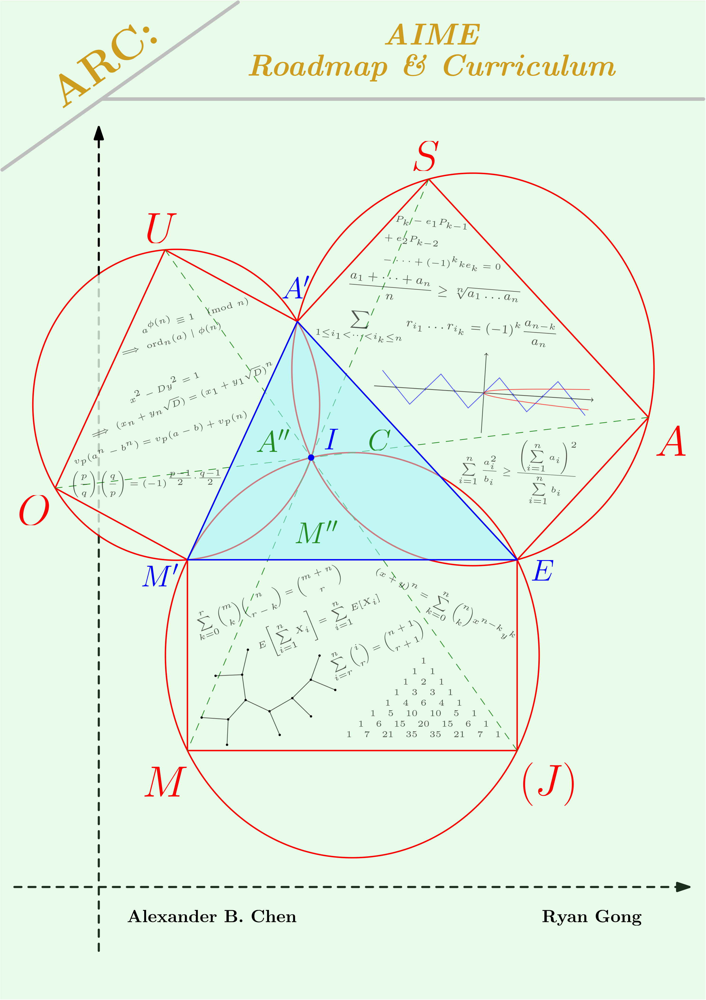
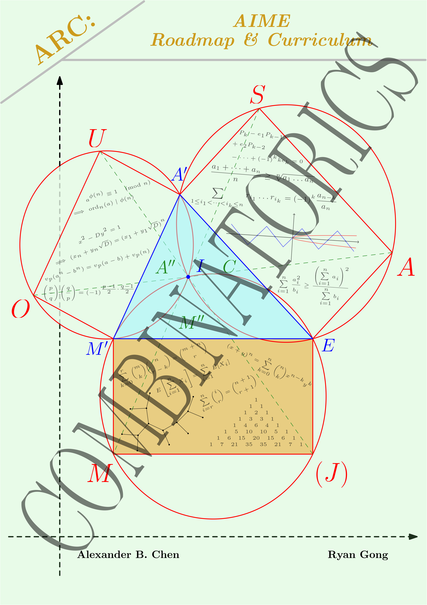
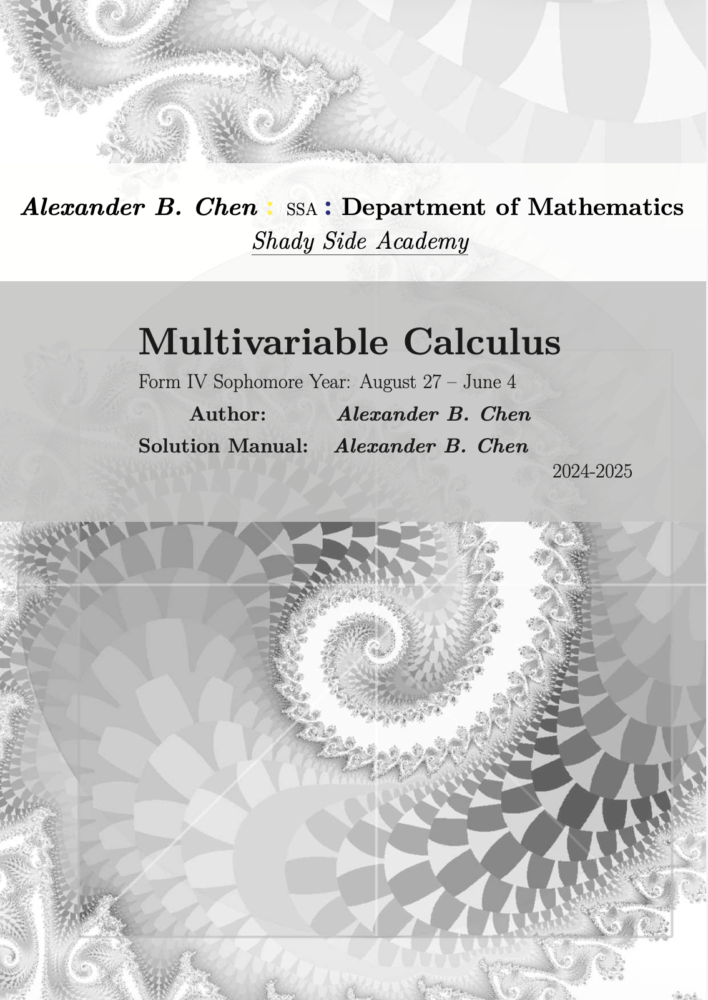

ARC · competition mathematics
ARC: AIME Roadmap & Curricula (with Ryan Gong); completed Combinatorics volume (2026-present).
ARC is the book we wanted when we were starting out: a path from the end of the school curriculum to the AIME that treats the reader as someone who wants to understand a technique rather than memorize a list of them. Each chapter builds one tool, shows where it came from, and then hands over problems chosen to fail in instructive ways.
The combinatorics volume is finished at 573 pages, running from counting principles through inclusion–exclusion, expected value, generating functions, and proof technique. Number theory and algebra are in progress, with geometry planned to close the series. It is the project I expect to still be working on when I graduate.


Textbook · multivariable calculus
A Multivariable Calculus Textbook. Solo, written sophomore year.
This one started as a joke. My advisor, after listening to me complain about our textbook, asked why I didn’t write one myself. Three hundred and sixty pages later, the school teaches from it.
The book takes the standard sequence but spends most of its length where students actually get stuck: double and triple integrals, changing coordinates, and the bookkeeping of setting up a region correctly in the first place. Writing it is where I learned that an explanation which satisfies me is not the same thing as one that works for a reader.

pdf in use at SSA
Abstract algebra & number theory · Math Team, 2026–27
An Abstract Algebra & Number Theory Course, written and taught at club meetings.
A course I wrote and now teach, modeled on how Ross does it: start from the order and ring axioms, prove the things everyone assumes, and let the interesting theorems arrive as consequences rather than announcements. These are real lecture notes with problem sets behind them, not slides.
Each lecture ships with a matching homework set, and a few results are posed as prove-or-disprove-and-salvage rather than stated outright, which is the part students find most annoying and learn the most from.
lectures & homework ongoing
Partial differential equations · University of Pittsburgh
PDE Lecture Notes, typed alongside the UPitt course.
Notes I keep for my own PDE course at Pitt, typed as the lectures happen and cleaned up afterward, with the derivations written out at the length I need them rather than the length a textbook allots. Homework solutions live in the same folder.
notes folder ongoing
Course projects · foundations
Set Theory Projects, from the axioms through ordinals and cardinals.
A sequence of projects from a set theory course, starting at the axioms and working up through order types, ordinals, and cardinal arithmetic. It is the closest thing on this page to pure foundations, and the first place I had to be careful about the difference between a definition and a claim.
Course projects · notes and code
Fractal Geometry & Chaos Theory, a project sequence.
Iterated function systems, the Heighway dragon, the Mandelbrot set, and Julia sets, worked through as a sequence of written projects with the pictures generated rather than borrowed. The later projects prove the escape-radius bound and argue about what quasi-self-similarity actually means, which is more interesting than rendering pretty images and considerably harder.